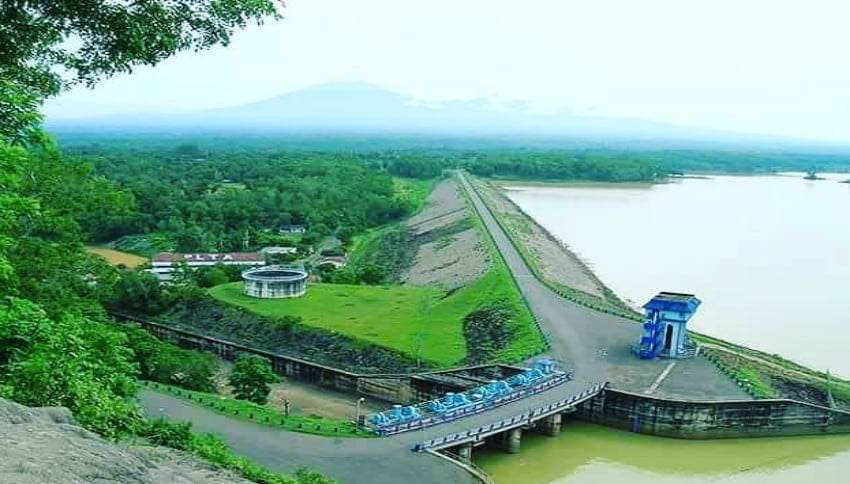
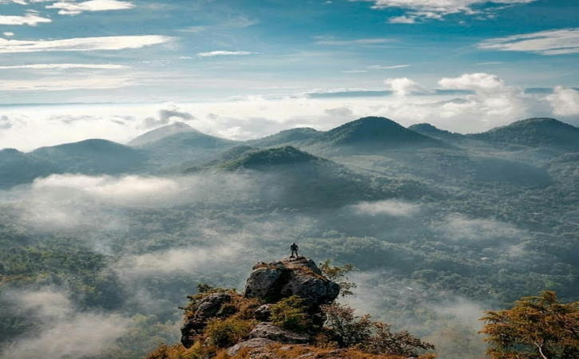
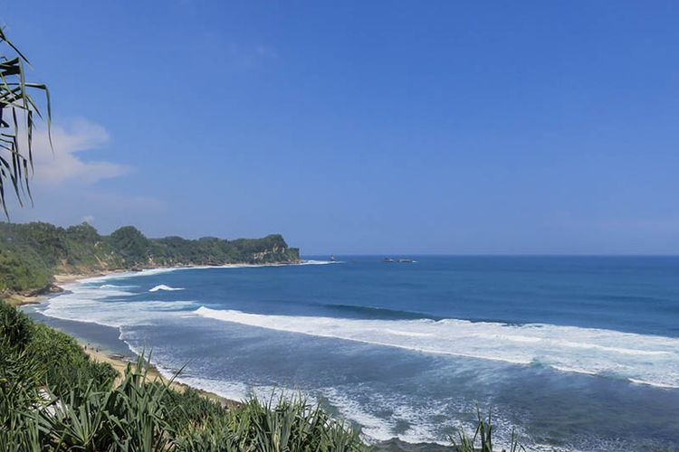

Destinasi Wisata Unggulan
| Foto | Nama Tempat Wisata | Alamat | Jenis Wisata | Biaya Masuk |
|---|---|---|---|---|
|  | OW Waduk Gajah Mungkur | Godean, Sendang, Kec. Wonogiri, Kabupaten Wonogiri, Jawa Tengah 57694 | Wisata Alam, Waduk | Rp. 15.000 |
|  | Bukit Cumbri | Kepyar, Purwantoro, Kabupaten, Ngudal, Pagerukir, Kec. Sampung, Kabupaten Wonogiri, Jawa Tengah 57695 | Wisata Alam, Bukit | Rp. 10.000 |
|  | Pantai Nampu | Gunturharjo, Kec. Paranggupito, Kabupaten Wonogiri, Jawa Tengah 57678 | Wisata Bahari, Pantai | Rp. 10.000 |